Combat
- For technical details about combat mechanics, see Combat/Mechanics.
Combat is the skill associated with fighting monsters, such as in The Mines or the Skull Cavern. Combat experience is increased by killing monsters, with more difficult monsters granting more experience. It can also be gained by reading the Combat Quarterly or Book Of Stars.
Each increase in Combat Level adds 5 HP (health points) to the player's health meter, with the exceptions of levels 5 and 10. Health points are only increased when levelling up to levels 5 or 10 if the Fighter and Defender professions are chosen. Level-ups may also add Crafting or Cooking recipes. Unlike other skills, there is no proficiency effect from this skill since weapons do not require energy.
During the first few days in Stardew Valley, the Mines are closed due to an accident by Joja Corporation. On day 5, the player will receive a letter in the mail from Joja Corp, explaining that the landslide blocking the mines has been cleared, and the mine entrance will be open. At this point, combat becomes available to players. An exception is those who chose the Wilderness Farm, which starts with monsters at the first night.
As with other skills, experience level is increased immediately upon slaying a monster, but the "level up" window doesn't appear until the player sleeps (or until all players sleep in multiplayer).
Note that killing monsters on the Farm grants only 1/3 of the standard amount of experience.[1]
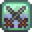
Combat Skill
| Level 1 | Level 2 | Level 3 | Level 4 | Level 5 | |
|---|---|---|---|---|---|
| Crafting Recipes: | Crafting Recipes: | Cooking Recipes: | Crafting Recipes: | Choose a Profession: | |
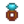 Sturdy Ring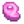 Bug Steak |
Life Elixir | Roots Platter | 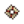 Warrior Ring |
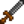 Fighter
|
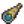 Scout
(Note that the increase is multiplicative. The formula is: critChance = critChance * 1.5) |
| Level 6 | Level 7 | Level 8 | Level 9 | Level 10 | |
| Crafting Recipes: | Crafting Recipes: | Crafting Recipes: | Crafting / Cooking Recipes: | Fighter: | Scout: |
| Oil of Garlic | Ring of Yoba 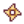 Thorns Ring |
Explosive Ammo | Squid Ink Ravioli | 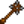 Brute
(Stacks multiplicatively with Fighter) |
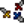 Acrobat
|
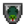 Defender
|
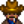 Desperado
(2x Critical strike damage) | ||||
Experience Points
250 Combat XP is gained for reading a copy of the Combat Quarterly or Book Of Stars.
The following table lists the experience points gained for killing the indicated monster.[2]
| Monster | Experience (XP) |
|---|---|
| Green Slime | 3 |
| Dust Sprite | 2 |
| Bat | 3 |
| Frost Bat | 7 |
| Lava Bat | 15 |
| Iridium Bat | 22 |
| Stone Golem | 5 |
| Wilderness Golem | 5 |
| Iridium Golem | 15 |
| Grub | 2 |
| Cave Fly | 10 |
| Frost Jelly (i.e., Blue Slime) | 6 |
| Sludge (i.e., Red, Purple, Copper, or Iron Slime) | 10 |
| Ghost | 15 |
| Carbon Ghost | 20 |
| Duggy | 10 |
| Rock Crab | 4 |
| Truffle Crab | 4 |
| Lava Crab | 12 |
| Iridium Crab | 20 |
| Squid Kid | 15 |
| Shadow Brute | 15 |
| Shadow Shaman | 15 |
| Skeleton | 8 |
| Metal Head | 6 |
| Bug | 1 |
| Mummy | 20 |
| Big Slime | 7 |
| Serpent | 20 |
| Mutant Grub | 6 |
| Mutant Fly | 10 |
| Pepper Rex | 7 |
| Haunted Skull | 15 |
| Tiger Slime | 20 |
| Lava Lurk | 12 |
| Hot Head | 16 |
| Magma Sprite | 15 |
| Magma Duggy | 18 |
| Magma Sparker | 17 |
| False Magma Cap | 14 |
| Dwarvish Sentry | 15 |
| Putrid Ghost | 25 |
| Shadow Sniper | 20 |
| Spider | 15 |
| Stick Bug | 4 |
| Royal Serpent | 20 |
| Blue Squid | 15 |
Substats
Consuming certain foods or drinks, wearing particular Footwear or Rings, and choice of Weapon can all give Stat Bonuses that affect the player's Combat ability.
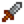
Attack affects how much damage the player does with each weapon strike.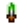
Crit. Power adds additional damage when hitting a critical strike.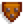
Defense affects how much damage the player takes from enemy strikes.Immunity affects the chance to be afflicted with certain debuffs.
The Weight of a weapon affects how far an enemy will be knocked back when struck with the weapon.
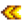
Weapon Speed and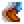
Player Speed are also a factor in successful Combat.References
- ↑ See GameLocation.onMonsterKilled in the game code.
- ↑ This data can be found in Data\Monsters.xnb as well as the constructors for Grub and Fly in the game code. In the Quarry Mine and dungeon floors of the Mines, monster data are set by MineShaft.getMonsterForThisLevel and the constructor for Bat in the game code.
History
- 1.0: Introduced.
- 1.6: Monsters defeated on the farm now grant 1/3 the normal amount of XP, instead of no XP. Combat Experience can now be gained by reading the Combat Quarterly or Book Of Stars.
| Skills & Stats | |
|---|---|
| Skills | Farming • Mining • Foraging • Fishing • Combat |
| Stats | Attack • Crit. Chance • Crit. Power • Defense • Immunity • Luck • Magnetism • Speed • Weight |